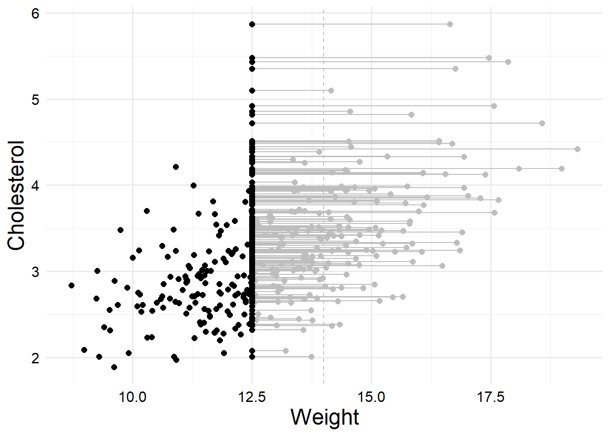

The contents of this page might change at any time – our lab group is still working on simulations and investigating other methods for dealing with censored predictors, so the content here might be buggy.
# Initial setup steps!# Need to load all of cmdstanr or some things act weirdlibrary(cmdstanr)
This is cmdstanr version 0.8.0
- CmdStanR documentation and vignettes: mc-stan.org/cmdstanr
A newer version of CmdStan is available. See ?install_cmdstan() to install it.
To disable this check set option or environment variable cmdstanr_no_ver_check=TRUE.
# ggplot2 theme setuplibrary(ggplot2)ggplot2::theme_set(hgp::theme_ms())# Load utility functionssource(here::here("utils.R"))# Set up a variable with the base path for this documentpth_base <- here::here("examples", "simple-censored-predictor")# Set a constant value for pRNG seedS <-370
Now we’ll consider the case where our outcome is perfectly observed, but we have a single predictor value with a limit of detection. Most commonly used models consider predictor values to be completely observed, exact measurements without error, which makes dealing with censoring of a predictor more complicated than dealing with censoring of an outcome. In order to address censoring in a predictor, we also have to assume the predictor values are, in some way, unknown, like we do for the outcomes. Before we discuss methods for dealing with a censored predictor, let’s take a look at some simulated data and the associated data generating process.
3.1 Data-Generating Process
The data will discuss consist of \(n\) observations of a predictor variable, \(x\), and an outcome variable, \(y\). To make this example simple, we’ll assume there is a linear relationship between \(x\) and \(y\). So the data generating process (DGP) for the outcome, \(y_i, \ i = \{1, 2, \ldots, n\}\), is \[
\begin{align*}
y_i &\sim \mathrm{Normal}\left(\mu_i, \sigma^2\right) \\
\mu_i &= \beta_0 + \beta_1 x_i^*
\end{align*}
\] where \(x_i^*\) represents the true value of our predictor. Importantly, for the predictor, \(x\), to be censored, there also has to be a data generating process for \(x\). If we conduct a controlled experiment where we determine the values for \(x\), it doesn’t make sense for \(x\) to be censored (which is why this case is discussed less often than the case of a censored outcome). But if we are conducting an observational study, where we expect \(x\) to influence \(y\), but we cannot directly manipulate the value of \(x\), then it makes sense for \(x\) to potentially be censored. Like with a censored outcome, we can discuss the DGP for the latent or true \(x_i^*\) values, and the observation process which generates our imperfect observation \(x_i\). Of course, the most simple example would be a Normal distribution1: \[
x_i^* \sim \text{Normal}\left(\lambda, \tau^2\right).
\]
This is the part where we’ll just say you can put whichever distribution here as well – don’t worry, we’ll do another non-normal example after this. Now that we have a DGP for the latent \(X^*\) values, we need to specify our observation model. For a simple case of censoring, this could include a lower limit of detection (LoD), an upper LoD, or both. For example, with a lower LoD, the observation model might look like this:
Here, \(x_{\min}\) is a constant value representing a lower limit of detection – if the latent value \(x_i^*\) is less than the threshold represented by \(x_{\min}\), we just observe \(x_{\min}\). If the true value is greater than this threshold, we observe the true value. This is not a unique observation process – we can, in principle, write down any value for the censored observations. To avoid confusion, we should also define an indicator variable for whether the \(i\)th observation is censored: \[
c_i = I\left( x_i^* \leq x_{\min} \right) =
\begin{cases}
1, & x_i^* \leq x_{\min} \\
0, & \text{otherwise}
\end{cases}.
\] Typically, we can observe all values of \(c_i\), and we assume that these are measured perfectly (although this is not strictly necessary, as we could incorporate measurement error and thus misclassification models into our observation process, but we neglect those here for the sack of simplicity). If you receive a data set you know a variable is censored, but there is no way to determine which values are censored due to improper coding and recording, there is not much you can do to resolve the situation. So it is typically best to record censored values using some value which could not have been observed if the observation were not censored. Do not worry if this description is abstract – next we will consider a concrete example which will hopefully help to make these concepts concrete.
For reference, we can write down the entire data-generating process all together. Note that from this DGP, we observe \((x_i, c_i, y_i); \ i = 1, \ldots, n\).
\[
\begin{align*}
y_i &\sim \mathrm{Normal}\left(\mu_i, \sigma^2\right) \\
\mu_i &= \beta_0 + \beta_1 x_i^* \\
x_i^* &\sim \text{Normal}\left(\lambda, \tau^2\right) \\
x_i &= \begin{cases}
x_{\min}, & x_i^* \leq x_{\min} \\
x_i^*, & x_i^* > x_{\min}
\end{cases}; \\
c_i &= I\left( x_i^* \leq x_{\min} \right)
\end{align*}
\] Here, \(\sigma\) and \(\tau\) are positive real numbers, and the following are real-valued constants: \(\beta_0\), \(\beta_1\), \(x_{\min}\), and \(\lambda\).
3.2 Weighing cats
Now that we’ve gone through the basics of the data-generating process, let’s set up the DGP for an example data set. Once we’ve worked out the DGP, we’ll take a look at some simulated data from this example. Then we’ll finally discuss methods for dealing with censored predictor data.
Suppose we’re conducting a study on cholesterol in cats, and we want to know whether elevated cholesterol levels are associated with cat weight – presumably, heavier cats have higher overall cholesterol values. For simplicity, we limit our study to adult male American shorthair cats (we can recruit other types of cats after we finish this pilot study). According to this article, the normal weight for such a cat is from 11 – 15 pounds. So, we’ll take 13 lbs. as the average weight of a cat, and 2 lbs. as the standard deviation.So, letting \(x_i^*\) represent the true weight of the \(i\)th cat, we would write \[x_i^* \sim \mathrm{Normal} \left(13, 2^2\right).\]
Now, the problem is that we do not have a very good scale – our scale is accurate to the tenth of a pound, but the highest value it can measure is 14 lbs[^Our scale could also have a lower bound, but in this case it’s probably so low that we would never get any left-censored observations.]. In terms of the DGP, we would say that \[x_{\max} = 14.\]
Using that information, we can then write out the observation model for the weight data. \[
x_i = \begin{cases}
x_{\max}, & x_{\max} \leq x_i^* \\
x_i^*, & x_i^* < x_{\max}
\end{cases}.
\] This is not much more complicated than the abstract example we wrote out before that only had a lower LoD, in fact it’s easily taken care of in the same likelihood step. Now, we’ll also need to set up an indicator variable, which we call \(c_i\), that tells us if our weight values are censored or not.
Next, we need to pick a distribution for our outcome. Since many biological concentration values often follow log-normal distributions, let’s use that for our cholesterol levels. Based on this article (I have no idea how accurate it is, if at all, just like the previous one), the normal amount of cholesterol for a cat is 1.8 – 3.9 mMol/liter. So, we just need to choose distribution parameters. Note that for log-normal outcomes, it is almost always easier to use a normal distribution (Gaussian) model on the log-scale than it is to actually fit a lognormal model, so we’ll do that.
If we treat the range the same as we did previously, we can estimate that the overall average is around 2.85, with a spread of 1.05. That seems a little high, so let’s assume they gave us a two standard deviation range, and cut it in half, and we’ll round that down to \(0.5\), which is probably good enough for government work. (Of course if you want to simulate the data, you can make whatever arbitrary assumptions like this that you prefer instead.)
So, we would write the distribution for our cholesterol values, which we’ll call \(y\), as
To relate this to the weight values, we would then write out our linear model for \(\mu_i\), the mean, as
\[
\mu_i = \alpha + \beta \cdot x^*_i.
\]
Choosing values of \(\alpha\), \(\beta\), and \(\sigma\), that make sense together and match the ranges we expect is kind of hard – for the purposes of this simulation, I just messed around until I got values that I liked.
# List of data generating parameters / simulation parametersdata_gen_parms <-list(# Number of observations to generaten =337,# Set a static constant value for the lower limit of detection (LoD)ulod =14,# Linear model interceptalpha =0.35,# Linear model slopebeta =0.06,# Linear model residual variancesigma =0.15,# Mean of normally distributed x valuesw_mu =13,# SD of normally distributed x valuesw_sd =2,# pRNG seedseed = S)
So for this example, I choose the simulation parameters \(\sigma = 0.15\), \(\alpha = 0.35\), and \(\beta = 0.06\). We can interpret these parameters in the standard way for linear regression, noting that they are in terms of the log-cholesterol. Now we need to simulate the data. I randomly decided that we should have 337 cats in our study sample.
generate_cat_weight_data <-function( n, ulod, alpha, beta, sigma, w_mu, w_sd, seed =NULL) {# Set the seed, using the current unix time if one is not givenif(is.null(seed)) {set.seed(Sys.time())} else {set.seed(seed)}# Generate the data l <- tibble::tibble(w_star =rnorm(n, w_mu, w_sd),w =ifelse(w_star >= ulod, ulod, w_star),c =ifelse(w_star >= ulod, 1, 0),mu = alpha + beta * w_star,y =exp(rnorm(n, mu, sigma)) ) o <- dplyr::select(l, w, y, c) out <-list("latent"= l, "observed"= o)return(out)}dat <-do.call(generate_cat_weight_data, data_gen_parms)dat_latent <- dat$latentdat_observed <- dat$observeddplyr::glimpse(dat_latent)
You can use this function to generate similar datasets with arbitrary parameters if you want. Note that in this example, about 31 percent of our predictor values are censored.
Now let’s take a quick look at the latent data so we can visualize the effect of censoring the predictor.
dat_latent |>ggplot() +geom_vline(xintercept = data_gen_parms$ulod,linetype ="dashed",color ="gray" ) +geom_segment(aes(x = w_star, xend = w,y = y, yend = y ),color ="gray" ) +geom_point(aes(x = w_star, y = y), color ="gray", size =2) +geom_point(aes(x = w, y = y), color ="black", size =2) +labs(x ="Weight", y ="Cholesterol")
Here the gray points show the true latent values of the censored points, and the black points show what we actually observed. You can see that we obviously observe a much smaller range of data when censoring happens. If we had the latent variables in real life, we could use a standard regression model to estimate them, like this.
Due to sampling error, the estimates are not perfect, but the confidence intervals contain the true values and the estiamtes are reasonably close.
So, the natural next question is what happens when we fit the model with the actual observed data that’s been censored? (I always call this the “naive” model, because we are naively hoping for a model that breaks our assumptions to work.)
In this case, we can see that the estimates are definitely biased. The CI for the slope doesn’t even include the true value. Honestly, most models we fit in real life are probably more incorrect than this though, so interpreting this coefficient with a hefty amount of caution would probably not be the end of the world. However, we can do better, and censoring can also cause worse problems.
3.3 More censoring!
Of course, if ignoring the problem didn’t make a difference, we would want to just ignore it, right? But let’s see what happens when we increase the amount of data that are censored. So this time, let’s say our scale has a maximum of 12.5 lbs[^A good question to ask at this point is whether we should actually be doing this study if we can’t get better measures. But some immunological or environmental studies actually have more than 50% censored or missing data, and sometimes the question is so important that we really want to get the most out of the data we have.]. So first let’s rerun the simulation.
data_gen_parms_2 <- data_gen_parmsdata_gen_parms_2$ulod <-12.5# Resimulate the data -- note that because we used the same random seed, the# only that will change is the amount of censoring.dat2 <-do.call(generate_cat_weight_data, data_gen_parms_2)dat2_latent <- dat2$latentdat2_observed <- dat2$observeddplyr::glimpse(dat2_latent)
If we plot these new simulated data, we can see that many more data points are censored that before, and about 60 percent of the predictor values are censored; much more than the previous example.
dat2_latent |>ggplot() +geom_vline(xintercept = data_gen_parms$ulod,linetype ="dashed",color ="gray" ) +geom_segment(aes(x = w_star, xend = w,y = y, yend = y ),color ="gray" ) +geom_point(aes(x = w_star, y = y), color ="gray", size =2) +geom_point(aes(x = w, y = y), color ="black", size =2) +labs(x ="Weight", y ="Cholesterol")

Now let’s see what happens when we fit a naive model.
Now we can see that the estimates are much worse. The intercept is actually negative, with a wide confidence interval, and the slope has been severely inflated. So let’s see what we can do about that.
3.4 Model for censored predictors
Let’s first write out the entire data generating process in one place.
Here, we assume \(x_{\max} = 12.5\) is a known constant. In future tutorials, we’ll discuss what to do if this isn’t a known constant, but in most situations that arise in a lab study, we do know the censoring limits.
Now, the unfortunate thing about censored predictors like this, is that there are (to my knowledge) no out-of-the-box models that can adjust the likelihood. Most frequentist methods assume that the \(x_i\) predictor variables are known constants which have no intrinsic error. Of course this is rarely true (outside of a specific type of experimental setup), and there are errors-in-variables models which can help to address this. But I’m not aware of any errors-in-variables implementations that allow for arbitrary and censored predictor distributions.
Because directly modeling the likelihood of the predictor variable is quite difficult (we will discuss this in future tutorials), we’ll use a constrained imputation approach in Stan. Sometimes called a “full Bayesian” approach, we specify a distribution for the predictor values. Then, we can use observations of the predicted values to estimate the parameters, and we can impute censored observations from a truncated distribution where the imputed value is guaranteed to be less than the limit of detection (for a lower limit).
This type of model is implemented in the following Stan code. To fit a Stan model, we’ll also need to specify priors, and I decided to use the same generic Student’s (Half) \(t\) priors that I discussed in the previous section.
Model code
//// Regression model with a single censored predictor// Censoring handled by constrained imputation// Zane Billings// 2024-07-15//// The input data consists of:// N: positive scalar integer. The number of data records.// y: real vector of length N. The vector of outcome variable observations.// x: real vector of length N. The vector of predictor variable observations.// c: integer array of length N, either 0 or 1 for all entries.// c[i] = 0 if observation i is observed and c[i] = 1 if observation i is// censored.// u: real vector of length N. The vector of lower limits of detection.data {int<lower=0> N;int<lower=0> N_obs;array[N] real y;array[N_obs] real x_obs;real LoD;}// Transformed data// Computed from passed datatransformed data {// Number of censored and observed observationsint<lower=0> N_cens = N - N_obs;}// The parameters accepted by the model.parameters {// Regression parametersreal a, b;real<lower = 0> sigma;// x distribution parametersreal x_mu;real <lower=0> x_sd;// Vector of censored x valuesarray[N_cens] real<upper=LoD> x_cens;}// The model to be estimated. We model the output// 'y' to be normally distributed with mean 'mu'// and standard deviation 'sigma'.model {// x holdervector[N] x;// mu vectorvector[N] mu;// Priors a ~ student_t(3, 0, 2); b ~ student_t(3, 0, 2); sigma ~ student_t(3, 0, 2); x_mu ~ student_t(3, 0, 2); x_sd ~ student_t(3, 0, 2);// Likelihood x_obs ~ normal(x_mu, x_sd); x_cens ~ normal(x_mu, x_sd); x = to_vector(append_array(x_obs, x_cens)); mu = a + b * x; y ~ normal(mu, sigma);}
As with last time, first we need to set up a data list that matches what the Stan code expects in the data block. Note that for the imputation method, the data block only requires us to pass in the observed values of \(x\). This leads to some annoying but necessary data cleaning, where we have to make sure that all of the censored values are together in the dataset and all of the observed values are together in the data set, to make sure the correct \((x_i, y_i)\) pairs stay together.
List of 5
$ N : int 337
$ N_obs: int 134
$ y : num [1:337] 0.87 1.386 0.868 1.075 1.229 ...
$ x_obs: num [1:134] 12.4 11.3 12.5 12.5 12.5 ...
$ LoD : num 12.5
Now we can do the fun part of running the sampler.
fit <- stan_mod$sample(data = stan_data,seed = S,parallel_chains =4,chains =4,iter_warmup =1000,iter_sampling =1250,# Turn off printing messagesrefresh =0,show_messages =FALSE,show_exceptions =FALSE)
I silenced the printout for the purposes of this vignette, but we can quickly quick the diagnostics to show that, while there were a few divergences in the warmup stage, there were no post-warmup divergent transitions and sampling went fairly well.
Now we can take a look at the posterior distributions of our parameters of interest. Notably, we have full posterior distributions for all of the imputed predictor values, but those are generally not of much interest.
Here, we see that some of the parameter estimates are fixed, but others don’t actually seem to be. The model basically can’t tell where the intercept is, and the parameters for the mean and standard deviation of \(x\) are not quite right, especially the standard deviation. But more importantly, the estimate of the slope appears to be corrected – while the point estimate is not exactly correct, we are able to recover an accurate credible interval, and the slope is the main parameter of interest. So this imputation method manages to correct our effect estimate, although the issues with identifiability in this model might be harder to fix.
There’s actually a statistical issue with this Normal/Normal model: it’s not fully identifiable without extra constraints. See the errors-in-variables wikipedia page for a bit more info. But we’ll ignore that for now.↩︎